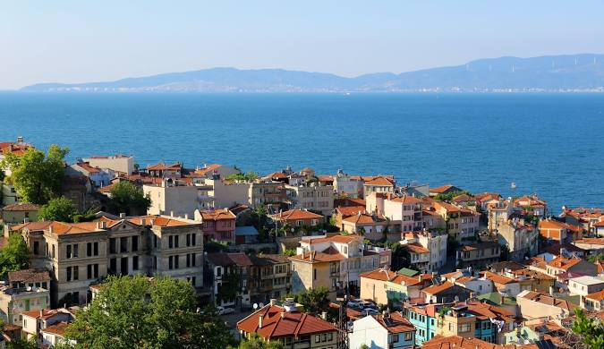

İlçenin tarihi milattan önce 7. yüzyıla dayanır. İlk adının Myrlea olduğu bilinmektedir. 12 İyon şehir devletinden olan Gemlik ve Erdek'in de kurucusu Kolofonlular tarafından kurulmuştur. Zaman zaman işgale uğrayan şehir, Makedonya Hükümdarı 5. Filip (Philippos) tarafından yıkılmış ve yerine, Apameia adı ile yeni bir şehir inşa edilmiştir. Bu şehir de işgale uğramış ve imar edilerek Montania adını almıştır. Mudanya adının buradan geldiği sanılmaktadır.
Mudanya, 1321 yılında Orhan Bey tarafından fethedilerek Osmanlı topraklarına katılmıştır.
Mudanya Kasabası, Mondros Mütarekesi'nden sonra, önce İngiliz istilasına uğramıştır. Fakat Jandarma Onbaşısı Şükrü Çavuş'un İngiliz Deniz Piyadesi'nin çıkartma yaptığı iskelede İngiliz Ordusundan bir binbaşı ile bir eri öldürmesi üzerine bu işgal bir gün bile sürmemiştir. 25 Haziran 1920'de gerçekleşen bu olaydan 11 gün sonra İngiliz ordusunun yerini Yunanlar almıştır. Düşman işgali altında 2 yıldan uzun süre kalan Mudanya, 12 Eylül 1922 günü Yunan işgalinden kurtulmuştur.
Türk Kurtuluş Savaşı'nı sona erdiren anlaşma 3-11 Ekim 1922 tarihleri arasında yapılan konferans sonucunda Mudanya'da imzalanmış ve Mudanya Mütarekesi adını almıştır.
